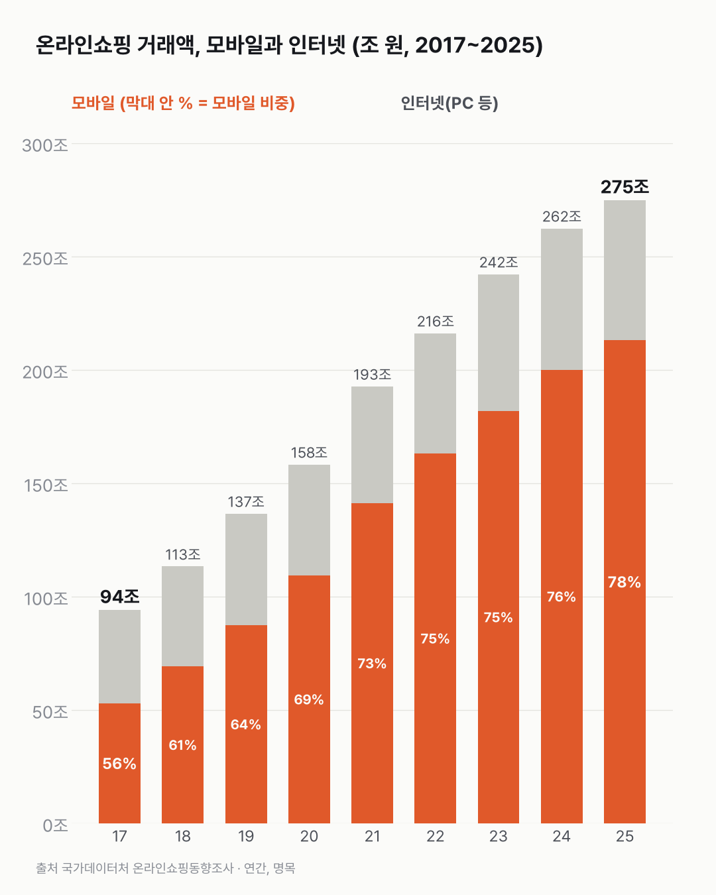
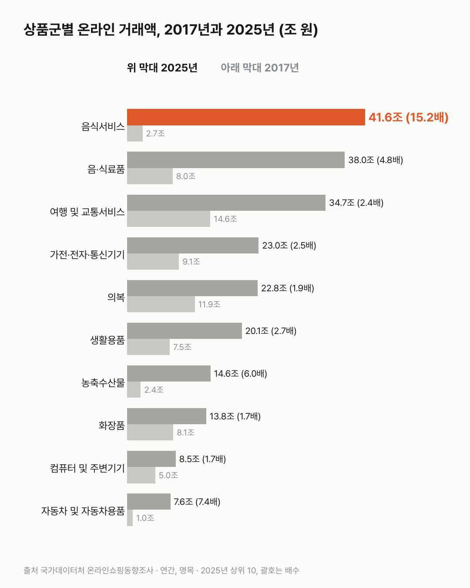

온라인쇼핑, 이제 대부분 휴대폰으로 해요
온라인쇼핑은 이제 대부분 휴대폰으로 하고, 가장 큰 품목은 온라인으로 주문하는 음식이에요. 여행 상품이 1위이던 때도 있었어요.

- 온라인쇼핑 거래액은 2017년 94.2조 원에서 2025년 274.9조 원으로 2.9배가 됐어요.
- 그중 휴대폰으로 산 비중은 56.2%에서 77.5%로 커졌어요.
- 온라인으로 주문한 음식(음식서비스)은 2.7조 원에서 41.6조 원이 돼, 2021년부터 품목 1위예요.
저녁 메뉴를 휴대폰으로 고르고, 장바구니에 담고, 결제까지 손가락 몇 번이면 끝나요. 이런 주문이 쌓인 숫자가 온라인쇼핑동향조사예요. 거래액은 해마다 한 번도 빠지지 않고 늘었어요.
휴대폰으로 산 비중은 2022년(75.4%) 이후 75~78%에서 천천히 오르고 있어요.
가장 많이 늘어난 건 음식서비스예요. 2.7조 원에서 41.6조 원으로 15배가 됐어요. 2025년엔 전체 거래액의 15.1%예요.
먹거리 상품도 크게 늘었어요. 음·식료품은 8.0조 원에서 38.0조 원(4.8배), 농축수산물은 2.4조 원에서 14.6조 원(6.0배)이 됐어요. 자동차 및 자동차용품도 1.0조 원에서 7.6조 원(7.4배)이 됐어요. 자동차용품을 온라인으로 이만큼 산다는 건 처음 듣는 얘기였어요.
2017년 1위였던 여행 및 교통서비스는 2.4배(14.6조 → 34.7조 원)로 3위가 됐어요. 의복은 1.9배, 화장품·컴퓨터는 1.7배로 전체(2.9배)보다 덜 늘었어요.

모두 물가를 빼지 않은 금액이에요. 가게에서 사던 걸 휴대폰으로 옮겨 산 건지, 쓰는 돈 자체가 늘어난 건지는 오프라인 판매와 나란히 놓아 봐야 알 것 같았어요.
이 숫자는 어디서 왔나요
출처
기준일 2017~2025년, 한 해 단위예요.
국가데이터처온라인쇼핑동향조사
- 온라인쇼핑몰 판매매체별/상품군별 거래액KOSIS DT_1KE10071원본 보기
연간 거래액, 판매매체(인터넷·모바일), 상품군 25개, 2017~2025년
어떻게 셌나요
- 온라인쇼핑몰의 한 해 거래액이에요. 물가를 반영하지 않은 그해 돈(명목 금액)이에요.
- 상품뿐 아니라 음식서비스(온라인으로 주문한 음식), 여행·교통서비스, 이쿠폰 같은 서비스 결제도 들어 있어요.
- 판매 경로는 인터넷과 모바일 두 가지로 나뉘어요. 휴대폰 비중은 모바일이 전체에서 차지하는 비율이에요.
- 상품군은 25개로 나뉘어 있어요.
한계 5가지
이 데이터로 말할 수 없는 것
- 명목 금액이에요. 물가가 오른 만큼 거래액도 커져요(같은 기간 소비자물가 상승은 앞선 글 참고).
- '음식서비스'의 정확한 범위는 확인하지 못했어요. 온라인으로 주문한 음식이고 배달 주문이 많을 것으로 보이지만, 포장 주문 등이 어떻게 나뉘는지는 이 표로 알 수 없어요.
- 온라인으로 옮겨 간 건지, 전체 소비가 늘어난 건지 가를 수 없어요. 오프라인 판매와 함께 봐야 알 수 있어요.
- 월별 값은 발표 뒤 수정돼요. 이 글의 숫자는 2026-10-29에 받은 값이에요.
- 원인은 말하지 않아요. 코로나, 배달 서비스 확산 등 이유는 이 데이터로 알 수 없어요. 특정 플랫폼 이름은 쓰지 않았어요.
새 글 나오면 받아 보기
피드 리더 앱에 이 사이트 주소를 한 번 넣어 두면, 새 글이 올라올 때 앱에 떠요. 가입이나 메일 주소는 필요 없어요.
받는 법 보기
- 피드 리더 앱을 하나 골라요. 새 글을 모아 보여 주는 앱이에요. 예를 들면 Feedly나 Inoreader가 있어요. 둘 다 무료고 웹·휴대폰에서 써요.
- 앱에서 '구독 추가'(+)를 누르고 아래 주소를 붙여 넣어요.
- 끝이에요. 새 글이 올라오면 앱 목록에 떠요.
https://protofu.github.io/opendata-insight/feed.xmlFeedly를 쓴다면 여기를 눌러 바로 추가할 수도 있어요.